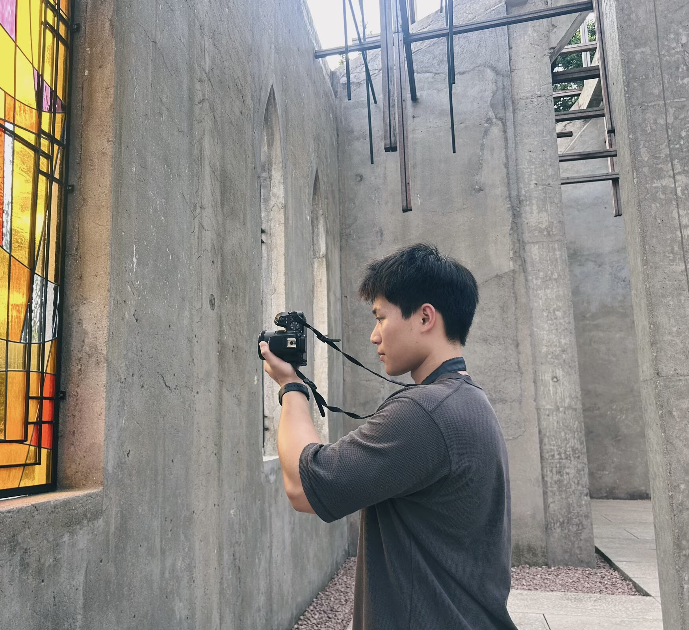

URBAN WIND ENGINEERING
Yue Xu许越
Ph.D. Student · Civil Engineering
South China University of TechnologyI study wind in complex urban environments and develop efficient, physics-informed methods to predict it.

About me
I am a Ph.D. student in Civil Engineering at South China University of Technology, supervised by Prof. Yi Yang. I work in the Wind Tunnel Laboratory within the State Key Laboratory of Subtropical Building and Urban Science.
My research connects Doppler wind LiDAR measurements, computational fluid dynamics, and machine learning. I am particularly interested in atmospheric boundary-layer modeling, neural operators for urban flow prediction, and wind-aware planning for low-altitude unmanned aerial vehicles.
Selected publications
Google Scholar-
URBAN CLIMATE
A novel urban boundary layer model integrating lidar measurement and physical equation constraints
@article{xu2026urban, title = {A novel urban boundary layer model integrating lidar measurement and physical equation constraints}, author = {Xu, Yue and Yang, Yi and Yu, Xianfeng and Bai, Baojun and Wen, Kunbo and Yuan, Lijun and Lin, Xinjun}, journal = {Urban Climate}, volume = {67}, pages = {102951}, year = {2026}, doi = {10.1016/j.uclim.2026.102951} } -
PHYSICS OF FLUIDS
Transient reconstruction of urban wind field via physics-constrained reduced-order data assimilation
@article{xin2026transient, title = {Transient reconstruction of urban wind field via physics-constrained reduced-order data assimilation}, author = {Xin, Junzeng and Hu, Songyan and Xu, Yue and Xie, Zhuangning and Yang, Yi}, journal = {Physics of Fluids}, volume = {38}, number = {8}, pages = {085126}, year = {2026}, doi = {10.1063/5.0340887} } -
JOURNAL OF BUILDING ENGINEERING
Data-driven intelligent prediction of wind pressures on high-rise buildings subject to interference effects: A comparative study
@article{hu2026pressures, title = {Data-driven intelligent prediction of wind pressures on high-rise buildings subject to interference effects: A comparative study}, author = {Hu, Songyan and Xin, Junzeng and Xu, Yue and Xie, Zhuangning and Yang, Yi}, journal = {Journal of Building Engineering}, volume = {130}, pages = {117020}, year = {2026}, doi = {10.1016/j.jobe.2026.117020} }
Manuscripts under review
- XU et al.Sustainable Cities and Society(under review)
- XU et al.Applied Thermal Engineering(under review)
- XU et al.Building and Environment(under review)
Education
2026 — Present
South China University of Technology
Ph.D. in Civil Engineering
Supervisor: Prof. Yi Yang
2023
Changsha University of Science and Technology
Bachelor’s degree in Civil Engineering
Contact & affiliation
- Academic profile
- Google Scholar
- GitHub
- yuexu1240-dev
State Key Laboratory of Subtropical Building and Urban Science
School of Civil Engineering and Transportation
South China University of Technology
Guangzhou, Guangdong, ChinaUniversity website